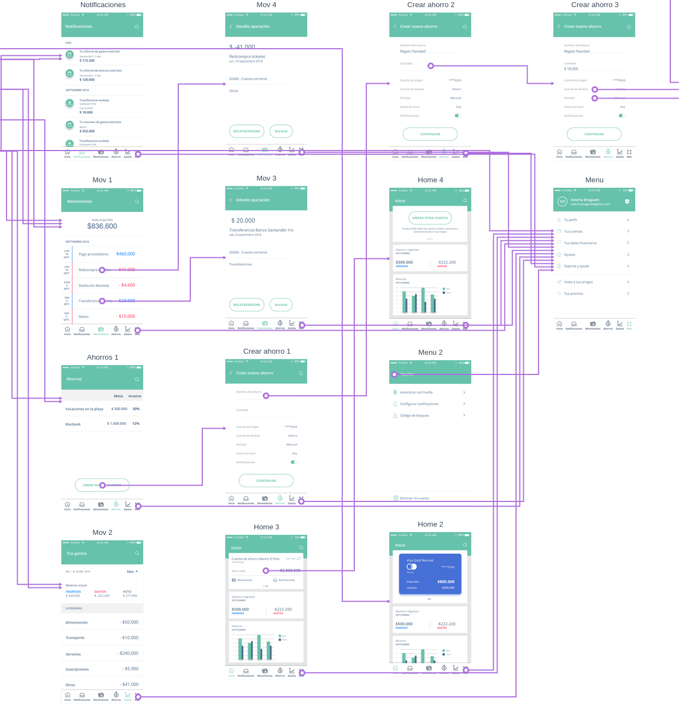

Re-diseño
App FintechAyuda a los clientes del banco a ahorrar, ver sus movimientos y estado de sus cuentas.

Ayuda a los clientes del banco a ahorrar, ver sus movimientos y estado de sus cuentas.
Re-diseñar y asesorar la aplicación bancaria "Tus finanzas"
Research
Valeria Droguett
1 semana
Re-diseñar una aplicación para banco, no siempre es fácil. Se debe tener en cuenta siempre al negocio y a los usuarios.
En este caso, analizamos data e informes de 6 meses de puesta en marcha la aplicación.
Con eso analizamos las problemáticas y aciertos de la aplicación en ese entonces
"Tus Finzanzas".
Esto es lo que pudimos deducir...
Entendimos que antes de empezar a realizar investigación con usuarios necesitábamos analizar la data
y entender más el negocio analizando cifras importantes, para ver cómo la aplicación ha ido funcionando los 6 meses.
Un punto importante que observamos, es que la raíz de las bajas descargas de la aplicación, es que la ésta se encontraba solo para sistema operativo IOS.
Este gráfico expresa claramente que quienes visitaban más su landing eran personas con sistema operativo Android.
Para entender mejor y de primer fuente el problema de la aplicación es realizando test con usuarios, para saber cuales son
sus puntos de dolor y ver posibles mejorar en cuanto a usabilidad y diseño.
Realizamos esos test con la herramienta Maze.
Estos fueron algunos de los comentarios que nos dejaron los usuarios.
Al darnos cuenta que los usuarios no entendían bien la aplicación. Decidimos colocarla a prueba, realizando test de usabilidad con "Tus finanzas". Es necesario conocer y empatizar más con las personas, es por eso que decidimos realizar entrevistas para poder validar hipótesis y entender el problema de fondo. Rescatamos lo más importante para los usuarios a la hora de utilizar estas aplicaciones.
Después de entrevsitar a los usuarios sobre el uso que le dan a las aplicaciones bancarias, identificamos a un usuario objetivo.

Pantallas principales de la aplicación "Tus finanzas"


En cuanto al MVP de la aplicación el estudio de mercado que realizamos, decidimos optar por un cambio de diseño, el nombre y logo de la aplicación. ¿Por qué se decidimos generar un cambio en una aplicación que solo lleva 6 meses en el mercado? Porque se necesita estar actualizado con los últimas tendencias en cuanto a diseño e interfaz. El diseño de la aplicación tiene un nombre que no va con el público objetivo al cual quiere dirigirse, que son los más jóvenes. Hay que incorporar ciertos detalles que difieran de un app orientada a personas de mayor edad. No solo decidimos crear un nombre, sino también una marca que represente el espíritu del banco, y lo que desea transmitir.

Keeper significa guardián, alguien que protege y cuida. En este caso, protege y cuida el dinero de los clientes del banco.
Pantallas principales del nuevo diseño "Kepper"


Parte del flujo de Keeper
Al ingresar a la sección de ahorros de la aplicación y crear uno nuevo, se le pediría a la persona, entre otras cosas, ingresar 2 cuentas; una de origen y otra de destino. Una es para poder manejar su dinero, y la otra es para guardar esos ahorros.
Permite crear ahorros, eligiendo una cuenta de origen y una de destino. A través del pinpass podemos transferir entre cuentas propias.
Permite ver los gastos en sus respectivas categorias.
Permite ver los movimientos de gastos y ahorros. Además del detalle de cada uno.

Antes

Después